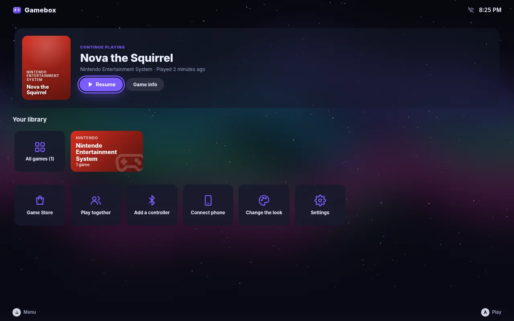
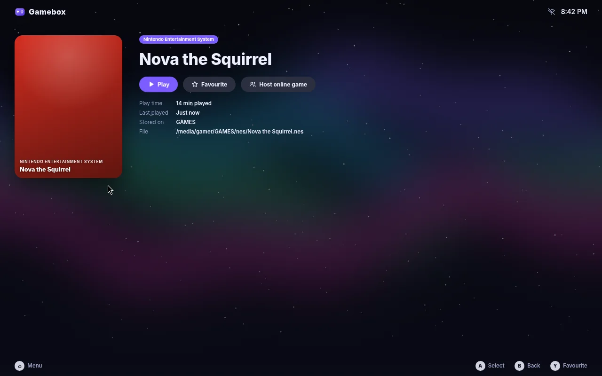
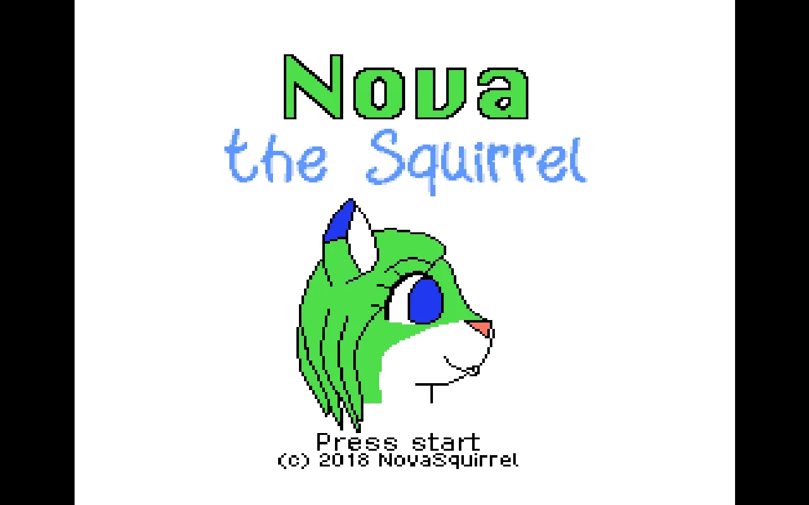

Gamebox
A games console for your PC or Raspberry Pi, with no accounts, subscriptions or DRM.
Download for PC (ISO) Raspberry Pi 4/5 image Android phone app (APK)Operating system



About Gamebox
Gamebox turns an old PC, a gaming PC or a Raspberry Pi 4 or 5 into a games console. Switch it on and you land in a clean, controller-friendly menu with your games ready to play. There's nothing to set up first and no account to make.
It plays retro games from about 35 classic systems, PC games from Debian and Flathub, and games made for Gamebox. The emulators are built in and stay out of sight: pick a game and it starts. Put your games on the console, a USB drive or a network drive and they show up on their own.
Gamebox is for anyone who wants a living-room console without a store, subscriptions or DRM. It's great with friends too: couch co-op, LAN and online play, and your phone can be a spare controller.
When you want to tinker, Desktop mode is one button away: a full Linux desktop with a web browser, a file manager and any software you like.
Features
- Retro games from about 35 systems, with the emulators built in
- Works on PCs and the Raspberry Pi 4 and 5
- Any controller: wired, Bluetooth, or your phone
- Games from the console, USB drives or a network drive, found automatically
- Free PC games from a controller-friendly Game Store
- Couch co-op plus LAN and online multiplayer
- Themes, colours, wallpapers and fonts to make it yours
- Desktop mode: a full Linux desktop one button away
Links
Source code on GitHub · User guide (installing and adding games) · All releases · Making games for Gamebox